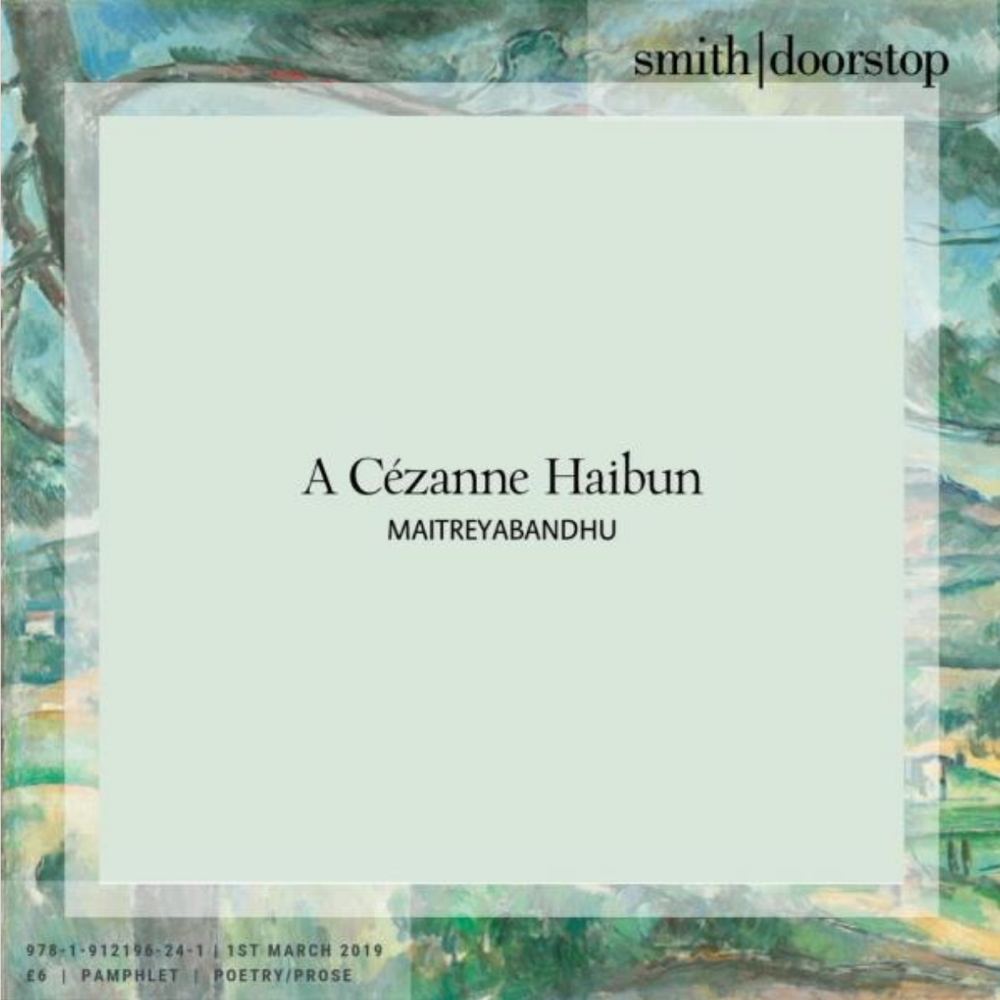

Maitreyabandhu, A Cézanne Haibun, A Review by Tony Beyer
Maitreyabandhu, A Cézanne Haibun, Smith/Doorstop Books, Sheffield, UK, 2019, 30pp, ISBN 978-1912196-24-1
A book written by an English Buddhist, influenced by Japanese short-form poetics, set in a pre-electric limestone cottage in Spain’s Sierra de Aitana and focusing on the life and ideas of the French post-impressionist painter Paul Cézanne was always likely to be a challenge for a reviewer to categorise.
This is a good thing. All original writing should question assumptions and redefine perspectives, and I admire Maitreyabandhu’s ability to keep this diverse range of concerns, among others, in the foreground of his work. Unlike many other writers who have time and place to concentrate on a particular interest, he allows his writing to be saturated by details of his locality, strengthening its appeal and immediacy.
Formally, Maitreyabandhu’s prose is his most accomplished talent. It is rich and lyrical, earthy and meditative, sparkling at times with instantaneous awareness:
On gravelly ground … a platoon of ants, blackberry and twinkling, manhandle
a broken snail shell, seeming to worry it from all angles.
In other passages, this minute observation gives way to family anecdote, literary quotation, or insightful recollection of artistic practice:
The whole painting clicked into place as if one good shove was all it needed.
These two examples typify Maitreyabandhu’s understanding of the intricate links between nature and human nature. This is haibun as prose poem.
It’s surprising, then, that the interspersed free verse poems are less convincing and less satisfactory. Having committed to a haibun format, Maitreyabandhu seems less confident in approaching not so much the convention as the spirit of haiku. Several of the poems are right on the mark:
I sit all morning
without my glasses,
unaccustomed silence.
or:
What can I wish you
but what you’d wish
yourself:
but why add two further tercets to the latter, including a Latin tag? I’m all for multiculturalism but these are heavy burdens deposited in very small spaces. Too many of the poems are stretched out by over-explanation or self-commentary. There is a strong haiku buried, for instance, in each of:
A late butterfly
contends with
the first autumn wind.
Its jittery nowhere-
for-certain
flight seems erratic
but might not be.
and:
Rain-parched colours,
flint track and
pine bark
blur into patches
that – is it a nuthatch? –
chirrups through?
Readers might like to subtract words to discover them. On the other hand, alternating prose and slightly longer form verse is a significantly European tradition, contemporaneous with Cézanne, if we think of innovators like Rimbaud. That Maitreyabandhu has the acuity to clarify and refine his haiku is evidence unmistakably by:
The whole valley
seems deserted –
only clouds live here.
These reservations aside, the book as a whole makes for rewarding reading. Maitreyabandhu’s sources on Cézanne are mainly a biography and a translation of the artist’s letters, so his account leans more towards the personal than the intellectual or art-historical. It made me think about how we regard figures of the past as somehow always having been old. Certainly, Cézanne in both his manner and his seriousness always seems to have been in advance of his years. As an example, to later generations he established very high standards of rigour and self-discipline.
Quite a lot of this comes through in Maitreyabandhu’s attractive record of his month in Spain with Cézanne, bats, a nuthatch, juniper, kerosene lamps, his maturing self, and a non-flush toilet, all of which he makes relevant to our comprehension of how we live on the planet. I’m grateful for that.
|